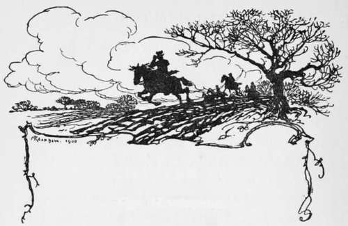

The Master. Continued
Description
This section is from the book "Hunting: A Manual of Fox, Hare, Stag & Otter Hunting", by J. Otho Paget. Also available from Amazon: Hunting: A Manual of Fox, Hare, Stag & Otter Hunting.
The Master. Continued
We ought always to assist the Master when we can, and not make his task the harder, as I am afraid we often do. We should remember that whereas we as individuals think solely of ourselves, he is planning how we may all best enjoy the sport. We may not perhaps approve of his methods, but it is very unlikely we should do any better. We should make allowances for the constant worry and anxiety that tend to upset a Master's temper. We may, perhaps, at times receive an unmerited rebuke, but it is very likely there have been occasions when we have deserved one and have not got it. Every one is liable to make mistakes, and a Master would be something more than human if he never made any at all. The Master and the hunt owe certain duties to each other, which, when cordially observed on both sides, will make things run smoothly for all concerned. However much the Master may abuse us, whether deserved or not, we must accept it all and never reply a word or argue the point. That is a rule which admits of no deviation, and if in the heat of the moment we transgress the law we must make ample apology at the earliest opportunity.
An M. F. H. who intends to do his duty to the country he presides over, should endeavour to live there as much as he can in the summertime, and not rush away directly one season is at an end, returning only for the beginning of the next. It is in the summer that he can become personally acquainted with the farmers in the hunt, and allay the friction that has been caused during the previous winter. There will be many little grievances which he will find can be easily smoothed away with tact and when attended to personally, but if left entirely to the secretary, they may assume grave proportions. Farmers always prefer to be interviewed by the Master direct, and a few honeyed words from him are of more avail than much money from the coffers of the hunt. I do not think farmers are singular in this respect, and I believe every one likes to deal with the principal instead of with a paid official. It is not the fault of the secretaries, as they generally do the work more for love of the sport than for a salary, and are nearly always most conscientious ; but the farmer considers he is entitled to a personal interview with the Master, and rather resents being put off with an agent.
There are many other things that the Master will find to do in the summer, all of which ensure the well-being of the hunt. Coverts want looking to, and in the early spring may want cutting or planting. Then every litter of cubs should be visited in turn, and those that are in unsafe places should be moved. Of course, these things can be done by the huntsman, but when the Master personally overlooks it is more satisfactory to all concerned. The future sport depends a great deal on the earth-stopper's care during the summer, and he will be more likely to take trouble when he sees the Master is interested in his work. There is, of course, no earth-stopping in the summer, but the man who performs that office in the winter usually has the care of coverts in his district, and he must see that the village poacher or stray curs do not disturb them. It is the usual custom to pay the man who looks after a covert so much for every find and so much for a litter, but vixens have a way of shifting their cubs to fresh quarters after the first two months, and the man who has watched an earth to protect the cubs may not be the man who eventually draws the litter money. The Master should give orders that each earth-stopper or keeper should report to him when he knows of a litter being laid up, and then he can pay a visit to verify it himself. A little extra generosity will not be thrown away. Personal supervision of the Master will often put a stop to the tricks of keepers, who will sometimes wire cubs in a small space until the commencement of cub-hunting in order to protect the young pheasants.
I do not mean to say that a Master ought never to go away, but I think that in the country over which he presides he ought to make his home, and should reside there as much as possible. Of course, I have thus far been referring only to the man who undertakes the duties of a Master, and not to the man who takes an active part in kennel management. There is more work to be done in the kennel during the summer than there is in the winter, and the man who sees to the breeding of the hounds will have his time fully occupied. However, even if the Master leaves the affairs of the kennel to the huntsman entirely, he will do well to be often there himself and watch the lines on which hounds are being bred.
If a man is not a landowner in the country he hunts, he ought to buy a small quantity, and thus have a personal interest in the soil. Farmers prefer a man at the head of the hunt who through his own experience can understand and sympathise with them in their troubles. The Master who does not know wheat or seeds from weeds is not in a very good position to warn his field from damaging those crops, and there are many other useful hints he will pick up by a closer acquaintance with the land. I do not say that a man is not eligible to be an M. F. H. if he owns none of the soil in his hunt, but it would be a point in his favour.
Local shows or other gatherings of farmers should be attended by the M. F. H., and then, of course, he must preside over his annual puppy-show, which he should try to make as attractive as possible. It is the custom on these occasions to ask only the men, but I think the wives should be included in the invitation, as it is chiefly on their shoulders that the burdens of puppy-walking fall.
The Master of a pack of foxhounds is as much a public servant as a member of Parliament, and when he accepts the position, with its honours and pleasures, he must not forget the duties and responsibilities which pertain thereto. There are pleasures in being Master even when a professional huntsman is employed ; but whether they are or are not outbalanced by the duties is a question that can only be answered by those who have been in office.
I am quite certain that nothing I could say would deter a really keen man from taking a pack of hounds if the opportunity occurred ; but, if I make the man who has only a moderate desire for the chase think twice before accepting a mastership, I shall have done something for the interest of the sport.
One of the Master's most unpleasant duties is to decide in time of frost whether it is or is not fit to hunt. My advice to the young Master is that he should decide the question himself, and should on no account consult his field. I may, perhaps, make an exception of some old and tried member of the hunt who can be depended upon to give an opinion that is not influenced by his own personal wishes. As a rule, those who turn up at a meet in frosty weather all want to see hounds find a fox, but they intend to please themselves about following them afterwards. With the hunt servants it is different : it is their duty to ride to hounds, and if they are worth their salt, no consideration of a horse slipping upon frozen ground will deter them from jumping fences. Therefore the Master must consider whether, in his opinion, the frost in the ground constitutes an extra danger, for if one of his servants is hurt, the blame must lie at his door.
Hounds' feet never ought to be considered, as if they have done sufficient road-work in the summer, their feet will have become hard enough to withstand any frozen surface. Fog is another question which often bothers the poor Master, but if you can see one field clear, and there are no railways in the neighbourhood, I think you ought to hunt; but don't hunt late on a foggy day.

Continue to: